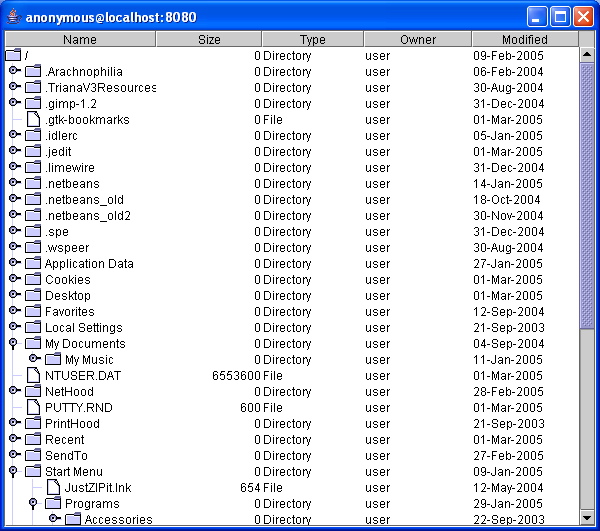

The latest version of this file can be found at http://jstyx.sourceforge.net/docs/tutorial.html
This tutorial gives an overview of the JStyx library and how it is used to create server and client applications. It assumes that you are familiar with Java programming, although you will by no means need to be an expert.
In the world of Styx, everything is represented as a file. In order to create a Styx server, we create a hierarchy of files (a namespace) and serve it up. Conversely, Styx clients open files on the remote server and interact with them using read and write operations. Files have their own permissions, just like on a Unix-like system.
Download the latest JStyx distribution from
http://jstyx.sourceforge.net and
simply extract the archive file in a directory of your choice. The
distribution contains a pre-built JAR (Java archive) in the dist
directory. This has been built with the Sun Java SDK 1.4.2. If you would like
to build the JAR again (if you have changed the source or you need a version
for a different version of Java), change into the bin directory and
enter build (this should work on most systems, Windows and *nix).
Note that you need Apache Ant to build
the distribution from source using this method.
First, make sure that you have a valid setup. To do this, open a console window,
change into the
bin directory of your distribution and enter TestServer.
This creates a Styx server that serves up your home directory (as identified by
the Java system property user.home) under the port 8080. This might
take a short while to start up, especially if your home directory contains a
large number of files. When it is ready, you will see a message like this in your
console window:
2005-03-01 16:05:03,890 [main] INFO uk.ac.rdg.resc.jstyx.server.StyxServer -
Listening on port 8080
This is example output from the log4j logging system. Your message might differ slightly. If you are familiar with Inferno, you should be able to interact with this server; open an Inferno shell and enter:
mount -A tcp!localhost!8080 /n/remote
If you are not familiar with
Inferno, or want to try another tool anyway, you can open a new console window,
change into the bin directory once more and enter:
StyxBrowser localhost 8080
You should see a graphical interface with a directory tree in the left-hand column and some information in the other columns, like this:
The StyxBrowser is a very simple GUI for browsing a Styx file hierarchy. At the moment it is very incomplete; in the future it will allow much more interaction with the Styx server. (Note that all files are marked with the user "user"; at the moment the Styx Server does not read the user/group/permissions data from the host filesystem.) Anyway, for the moment we just want to be sure that our setup works. Now we can learn a bit more about the JStyx library.
As mentioned above, creating a Styx server is a matter of creating a
hierarchy of files, then serving it up and waiting for connections. The
TestServer program creates the hierarchy of files from the local filesystem.
Let's look at the key parts of the TestServer program (it's in the
uk.ac.rdg.resc.jstyx.examples package):
String home = System.getProperty("user.home");
// Set up the file tree
StyxDirectory root = new DirectoryOnDisk(home);
// Set up the server and start it
StyxServer server = new StyxServer(port, root);
server.start();
It's very simple. We create a StyxServer object, passing it the
number of the port we want it to listen on and a StyxDirectory that
represents the root of the file hierarchy we want to expose. In this case, the
StyxDirectory is a DirectoryOnDisk, which simply mirrors a
directory in the host filesystem. When requests come in to read the children of
the DirectoryOnDisk, it simply reads the list of child files from the
host filesystem.
The steps to create any Styx server are always the same:
StyxDirectory.StyxServer object from the StyxDirectory and a port number.StyxServer.Often, the file hierarchy we want create will not simply be a mirror of the directory structure of the underlying filesystem. We may want to do something more interesting, such as creating a "synthetic" file that performs some task. We'll go through the process of creating a Styx server that serves up a file that users can read to obtain the current date and time.
All files in a server-side JStyx hierarchy subclass the abstract class
uk.ac.rdg.resc.jstyx.server.StyxFile. (StyxDirectory is also a
subclass of StyxFile and DirectoryOnDisk is a subclass of
StyxDirectory.) So let's create a class called DateFile that
inherits from StyxFile:
import uk.ac.rdg.resc.jstyx.StyxException;
import uk.ac.rdg.resc.jstyx.server.StyxFile;
public class DateFile extends StyxFile
{
public DateFile() throws StyxException
{
super("date");
}
}
There are many constructors for
StyxFile, but we'll stick with the simplest for the moment, i.e. the
one that simply sets the name for the file (other constructors set file
permissions, the owner/group and other things). Note that all the StyxFile
constructors throw StyxException and so our constructor must do this
too (this will only be thrown if we attempt to create a file with the illegal
names "." or "..").
We must implement two abstract methods, read() and write().
These methods control what happens when users try to read from or write to the
file. (There are other methods that we can override, but we'll leave this till
later.) We shan't allow writing to this file so we shall always throw a
StyxException when a write request arrives (this sends an error message
back to the client):
import java.nio.ByteBuffer;
import uk.ac.rdg.resc.jstyx.server.StyxFileClient;
...
public void write(StyxFileClient client, long offset, long count,
ByteBuffer data, String user, boolean truncate, int tag)
throws StyxException
{
throw new StyxException("Cannot write to this file");
}
....
Note that we have to import a couple more classes. We shan't worry about all
the arguments to write() for the moment (see the javadoc or the source
for StyxFile if you're interested). Note, however, the first argument:
it allows us to find out which client is accessing the file. This raises the
intriguing and powerful possibility that the file could behave differently for
different clients. We shall see more of this later.
Now we can implement the read() method. This is the bit that does
the actual work. It will return the current date and time to the user:
import java.util.Date;
import uk.ac.rdg.resc.jstyx.StyxUtils;
...
public void read(StyxFileClient client, long offset, long count, int tag)
throws StyxException
{
// Get the current date and time in String format
String dateStr = new Date().toString();
// Convert the String to bytes in UTF-8 format
byte[] dateBytes = StyxUtils.strToUTF8(dateStr);
ByteBuffer buf;
if ((int)offset >= dateBytes.length)
{
// If the client has requested bytes from an offset greater than the
// length of the string, return zero bytes (signifies end-of-file)
buf = ByteBuffer.allocate(0);
}
else
{
// Work out the number of bytes to return
int bytesToReturn;
if (count > dateBytes.length - offset)
{
bytesToReturn = (int)(dateBytes.length - offset);
}
else
{
bytesToReturn = (int)count;
}
// Wrap the appropriate portion of the array as a ByteBuffer
buf = ByteBuffer.wrap(dateBytes, (int)offset, bytesToReturn);
}
// Send the data back to the user
this.replyRead(client, buf, tag);
}
...
Again, we have to import a couple more classes. The comments in the above method should explain what we're doing, but the gist of it is this:
java.nio.ByteBuffer and send
it back to the client with the replyRead() method of StyxFile.These steps are followed for the vast majority of StyxFiles that
will be created. (Note that Styx always uses the UTF-8 encoding for strings.)
Optional: Since the date is always returned in the same format, we
know the length of this file (it is always 28 bytes). We can make sure that
client see the correct length by overriding the getLength() method of
StyxFile:
import uk.ac.rdg.resc.jstyx.types.ULong;
...
public ULong getLength()
{
return new ULong(28);
}
...
(The ULong class is a simulation of an unsigned long, a type that
Java lacks.)
Now we can create a main() method that serves up this file in a Styx
server:
import uk.ac.rdg.resc.jstyx.server.StyxDirectory;
import uk.ac.rdg.resc.jstyx.server.StyxServer;
...
public static void main(String[] args) throws Exception
{
// Create the root directory of the Styx server
StyxDirectory root = new StyxDirectory("/");
// Add a DateFile to the root
root.addChild(new DateFile());
// Start a StyxServer, listening on port 9876
new StyxServer(9876, root).start();
}
...
The complete DateFile class is included in the JStyx distribution in
the uk.ac.rdg.resc.jstyx.examples package. To run the server, we must be
sure to set the classpath correctly. There is a handy script in the bin
directory of the distribution called JStyxRun that does this for us.
Change into the bin directory and run:
JStyxRun uk.ac.rdg.resc.jstyx.examples.DateFile
If all is well, you should see a log message saying that the StyxServer
is listening on port 9876.
Now that we have our server, we can create a client program that reads the file to obtain the current date and time. There are several ways of doing this using JStyx.
Note for Inferno users: you can use Inferno to interact with the server too, of course. Open a new shell window and enter:
mount -A tcp!hostname!9876 /n/remote
cd /n/remote
cat date
Note that you may need to run ndb/cs before doing this so that Inferno
can resolve hostnames into IP addresses.
Since everything in the Styx world is represented as a file or set of files,
Styx resources are very easily represented as URLs. In the case of our
DateFile that we created above, the URL of the file is:
styx://myhostname:9876/date(where myhostname is the name of the machine running the server
program, e.g. "localhost"). The first client program that we
shall create will use the Java URL class to get an InputStream that we
will use to read the file:
import java.net.URL;
import java.io.*;
import uk.ac.rdg.resc.jstyx.client.StyxFileInputStreamReader;
public class DateFileURLClient
{
public static void main(String[] args) throws Exception
{
URL url = new URL("styx://localhost:9876/date");
InputStream in = url.openStream();
// Use of StyxFileInputStreamReader ensures that UTF-8 is used to
// convert the bytes from the stream into characters
InputStreamReader reader = new StyxFileInputStreamReader(in);
BufferedReader bufRead = new BufferedReader(reader);
// Read the input data a line at a time and print to standard output
String line = null;
do
{
line = bufRead.readLine();
if (line != null)
{
System.out.println(line);
}
} while (line != null);
// Close the stream
bufRead.close();
}
}
This should be very familiar to Java programmers; we get an InputStream
to read the data, wrap it in a Reader to convert the binary data correctly
into characters, wrap that in a BufferedReader to allow us to read a line
of data at a time, then read data until we get a null return. The complete class
is included in the distribution as uk.ac.rdg.resc.jstyx.examples.DateFileURLClient.
To run this program, we not only have to set the classpath correctly, but we
also need to tell Java how to deal with styx:// URLs, using the
java.protocol.handler.pkgs system property. Both of these things
are done by the JStyxRun script, so we can simply run (from the bin
directory of the distribution):
JStyxRun uk.ac.rdg.resc.jstyx.examples.DateFileURLClientTODO: deal with debug messages
CStyxFile classBy using URLs we can download data from a Styx server whilst knowing very little
about how the JStyx libraries work. Sometimes, however, we want to get in a bit
deeper so we have more control over our programs. A key class from the client's
point of view is uk.ac.rdg.resc.jstyx.client.CStyxFile. (It is called
CStyxFile to avoid confusion with the server-side StyxFile class.)
import java.nio.ByteBuffer;
import uk.ac.rdg.resc.jstyx.client.StyxConnection;
import uk.ac.rdg.resc.jstyx.client.CStyxFile;
import uk.ac.rdg.resc.jstyx.StyxUtils;
public class DateFileClient2
{
public static void main(String[] args) throws Exception
{
// Create and open a connection to the remote server
StyxConnection conn = new StyxConnection("localhost", 9876);
conn.connect();
// Get a CStyxFile representing the DateFile at the remote end,
// opening it for reading
CStyxFile dateFile = conn.openFile("date", StyxUtils.OREAD);
ByteBuffer buf = null;
do
{
// Read a chunk of data from the file
buf = dateFile.read();
// If we have reached EOF, there will be no bytes in the buffer
if (buf.hasRemaining())
{
// Convert the data in the buffer to a string and print it
String s = StyxUtils.dataToString(buf);
System.out.print(s);
}
} while (buf.hasRemaining());
// Close the file and the connection
dateFile.close();
conn.close();
}
}